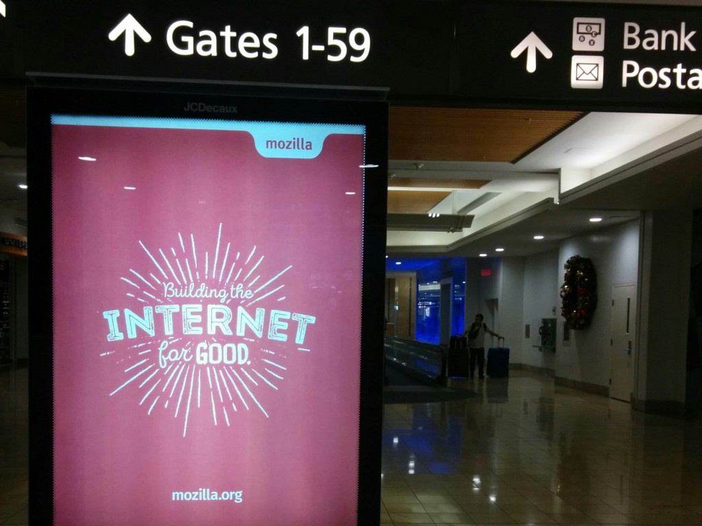

When I started the draft of this article, I had spent a year at Mozilla. Now it has been a year and a half, but the post title would be less cool.
tdlr; An amazing experience so far, a lot happened already. Working remotely is hard. Being pragmatic and satisfy everyone expectations is impossible.
The transition
Barcelona
The city is very pleasant, the weather is amazing — it never rains basically.
Being far from close friends is very hard. But I knew moving to Barcelona was not going to be a problem in itself since I speak Spanish and a little bit of Catalan.
I really enjoy the Mediterrean culture and gastronomy, and had a lot of interesting conversations and fascinating debates about politics, especially with regards to the Catalan independance.
Although the new mayor is making a lot of great infrastructure improvements for pushing the bicycles forward, it is still a very noisy and contaminated environment. Car drivers are still in velvet.
Working remotely
Leaving the collocial office of Makina Corpus in Toulouse and working as a full remotee was definitely the most impacting life change.
From previous experencies as a freelancer, I was aware of my inabilty to keep a discipline when working from home.
Thanks to Areski I landed at Betahaus, probably the best place to work from! This building is full of awesome people from all around the world, working in very distinct areas, from journalism to wood craving through cartoonists and photographs.
Still, interacting on a daily basis with remote colleagues through video calls and IRC can sometimes be very frustrating. Especially when the Internet connection is flaky, when proprietary software suck badly on Linux (I'm looking at you Vidyo) or when a cacophonous horde of motorcycles hijacks your microphone.
Timezones are also challenging :) Since Mozilla employees are spread around the world, it's not rare to extend the work day of a few hours in order to get in touch with colleagues! I can't complain, everything has been very flexible so far.
Favorably, Mozilla offers us the possibility to travel and meet regularly. We make our best to organize small workshops several times per quarter, in addition to the gatherings of the whole company twice a year. Those are super fun and extremely productive!
Maintaining former projects
As part of the transition, I had to withdraw from the several open-source projects I maintained while at Makina Corpus.
Obviously, giving up on something you had cherished for years is delicate. Emotions come in the way.
Some projects were not receiving the love and attention they deserved and that made me sad. But I realized I couldn't continue to watch them all and suffered from not being able to provide thorough answers on issues and questions.
I begged for help or support several times along the year, and eventually I left them :| That's perhaps part of the open-source darwinism.
By the way, Janis' Jazzband project is awesome! Think about it instead of using the Github organization of your current company...
Chocolate factory
Working for an organization that has a good image everywhere around the globe is quite rewarding of course (...a typical reaction: «Oh really! I use it at home, Firefox is the best search engine to send emails on Facebook»).
I remember very well the feeling of pride when I first came to the Mozilla office in Paris. Impressed by its stairs covered with a giant fox logo, I felt like I wasn't up to the job!
The welcoming workmates there helped lowering the pressure quickly. By the way, special thanks to the teams in charge of the different offices, they are amazing! Being so spoiled sometimes makes me feel disconcerted!
After a year, I somehow got used to the idea. But I must admit that I still feel some pride when my 3 years old kid shouts out «Daddy's wooooork!» as soon as he spots the browser logo :)
Still, the popular impostor syndrome is on watch: my coworkers are the best engineers in the world! A lot of them have their name in the W3C standards, and some have their own Wikipedia page!
Trolling the giants
If you think Mozilla is just the editor of a declining browser, please take some time to read the power of Mozilla.
There are a lot of expectations towards the organization. Lots of affection, concern, hope, and disappointment obviously. This leads to very strong criticism and attacks, which sometimes seem rather unfair. When you look at the overall landscape, who is the enemy?
Now that I am within the organization I understand what is at stake. Especially when considering the difference of size with the competitors (~100x). It does not mean I agree with every decision, but I grasp why concessions are necessary.
Storage team
I could not have joined a more desirable team. Our history takes its roots a long time ago. We've known each others for years! Tarek's books about Python were major pieces while I was learning, Alex was a trainee at Makina Corpus when I arrived there 6 years ago, N1k0 was one of the organizers of the fantastic "DjangoCong" 2012 edition, Natim and magopian were awesome comrades during DjangoCon Toulouse four years ago...
We are all aligned on the vision we have for decentralizing the Web, we work in the same timezone, we all speak French and we share the same taste for exquisite home-made food and beverages :)
I shall also mention Michiel and Ethan who joined the team recently!
By the way, check out our blog, in French and English.
Organization
Since we mostly work on backend stuff, we don't suffer too much from release agenda and marketing communication. The server can usually be upgraded transparently and our priorities reassessed depending of the present meteorology.
We have precise goals for the current quarter, but we are mostly self-organized. The open-source aspect of our work is an important property but the main purpose is still to serve internal needs. Everything we do to make Kinto a community project for example requires a lot of extra efforts and willpower.
Nevertheless, shipping features on the server-side is usually a lot easier than what other teams handle on the client-side: we treat with one operating system, deploy one main version, can introspect the server remotely and monitor internal details without too much pain.
We don't do much of agile ceremonials. Maybe because we work remotely. Also maybe because we haven't designated anyone as a proper product owner.
Our first project
When I joined the team, Firefox Hello had just been put in production, and the team was responsible for the server part: Loop server. The server handles Websockets and handshakes using NodeJS and Redis. Fixing bugs and implementing minor features was possibly the best opportunity for me to dig into this project.
One of the first goals that came up was to build a readinglist service, a sort of alternative to Pocket. We succeeded in setting up a stack, deploying and scaling it quite rapidly, working sometimes late at night. Since we wanted to capitalize on all the efforts we had done (API design, scaling, ...) we created a toolkit called Cliquet. I could talk about it at PyBCN and Pycon-FR.
We even hacked on readability, a JavaScript library that transforms a webpage into plain text. Maybe you executed it already if you used the Firefox Reader Mode. Before joining our team officially, N1k0 made a full-Web version of a readinglist app :)
Unfortunately, the readinglist project was shutdown at the last moment. That was hard to take, and we had quite a hard time recovering from this disappointment.
Booting Kinto
We revamped the readinglist server code and saw an opportunity to bring back our idea of a generic remote storage. Our first concrete use-case was a prototype for a payment and subscription service, which became a pretext to implement a fine-grained permissions API into our newly born Kinto.
> On Fri 26 December 2014, Mathieu wrote: > [...] > Whether Daybed will become a true Mozilla project or not is totally > unclear. >
Daybed never became a Mozilla project, but its concepts were all re-implemented in Kinto!
Last summer, Firefox OS had no way to synchronize bookmarks and browsing history accross devices. We built kinto.js, a JavaScript client for Kinto, focused on offline capabilities and records synchronization. Personally, I learned a lot from this project. N1k0 was leading us towards modern and elegant patterns in JavaScript, and we could get our hands dirty with IndexedDB.
As a side project I could spend some time on an offline-first Web app, Routina, for which we did a Kinto+React boilerplate.
We saw an opportunity to spread Kinto within the organization with the Go Faster initiative, which consists in shipping settings, content and features quicker that the 6-weeks release cycle.
We even did some experiments to have the UI translations shipped asynchronously!
Kinto was featured twice on Hackernews, and referred as an alternative to Parse and Firebase! This was both exciting and stressful, especially because it was my first experience of heavy exposure — unlike Tarek, N1k0 or Alexis who had lead notorious open source projects before, and already knew the downsides ;)
The funny part was someone saying «Google has Firebase, Apple has Cloudkit, Facebook has Parse, now Mozilla has Kinto»: how do we reply that we are only a few folks hacking cool stuff and that top-management is probably not even aware of it?
Coming next
In 2016, we now have Kinto instances running in production, and about to be used by millions of users to deliver assets of Firefox mobile, or revoke SSL certificates. It was a great opportunity to grow the eco-system, with a Web admin UI for example!
> On Fri 26 December 2014, Mathieu wrote: > [...] > I'm not likely to hack the C++ codebase of Firefox/Gecko, even though I > could and would if it was necessary. >
Well, here you go! In the last few months, I've spent a good proportion of my time contributing to Gecko. We want to replace the existing system based on a big XML file downloaded every day with a sweet diff-based synchronization of JSON (more info...).
On top of that, Kinto could become the key component for the storage.sync API implementation in Gecko, which would bring the Web Extension compability table close to 100%. As Michiel (founder of remoteStorage) said: this is really exciting because it would offer a decentralized remote storage with encryption support to everybody — contrary to the one offered by Google by the way.
One of the next challenges will presumably be related to horizontal scaling for massive usage of writable instances. We could also imagine integrating WebPush notifications which landed in Firefox 44 and Chrome 42.
Whether Kinto will replace the existing Sync server or not, it is completely uncertain and would require quite a big amount of work. Although that could make sense :)
Mozilla has a lot of exciting projects in the pipeline, like Servo or Tofino, which will gain visibility in the coming months, and could benefit from having a synchronized remote storage!
Note
Thanks Ethan, Areski and Remy for proofreading this article and giving me early feedback!
#life, #mozilla - Posted in the Personal category